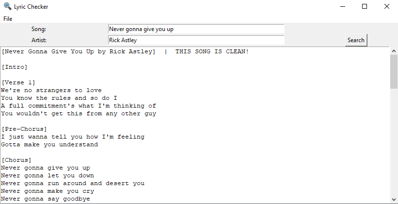

Step 1: Insert the song title in the "Song:" field.
Step 2: Optional, but recommended. Insert the song artist in the "Artist:" field.
Step 3: Click on the "Search" button.
Step 4: Once the program has found the song and lyrics, it will appear in the large text box below.
